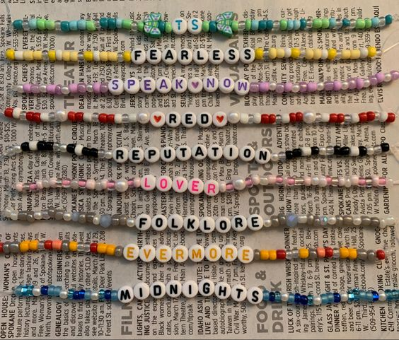
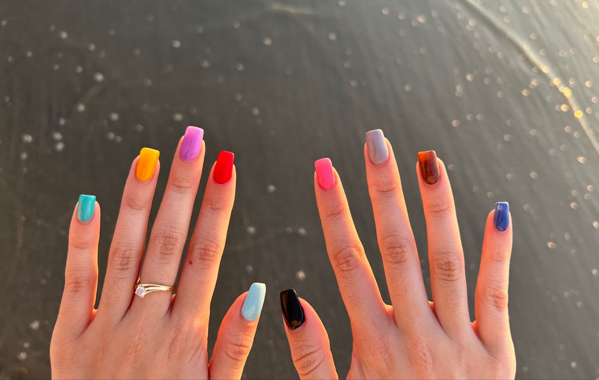
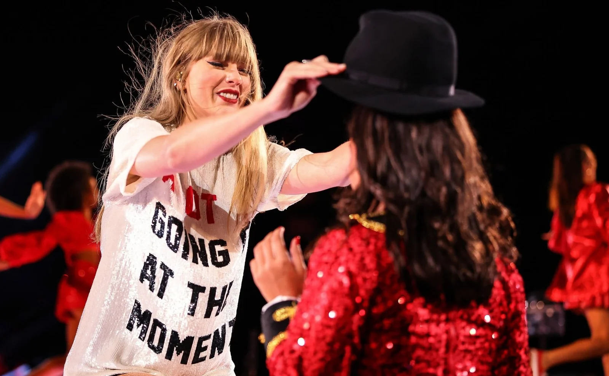

As pulseiras são feitas bem antes da data do espetáculo, elas são levadas nos braços e trocadas com as pessoas que também fizeram pulseiras

Para se arrumar para o show, além de escolher roupas que combinem com a estética das produções, é divertido pintar as unhas, uma de cada cor de cada álbum lançado

Uma das partes mais empolgantes durante os atos é a entrega do chapéu do figurino de RED, para uma criança da platéia